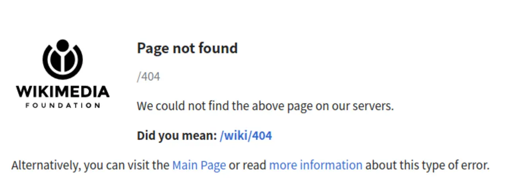

短答
软 404 是返回成功状态、正文却说内容不存在的 URL。
状态和文字不一致。信任状态的爬虫可能把 URL 留成一份单薄文档。人看到的是空状态。SEO 健康希望状态说实话：文档不在时用 404 或 410，状态为 200 时则应是一份真实文档。
定义
搜索工具有时会在自己的报告里标出这种模式。本文不展示这种报告，也不编造软 404 的数量。检查是本地的：获取样例 URL，读状态，读正文。如果空的搜索结果返回 200，并且 URL 被当作文档来链接，可以是同一种模式。
这如何影响可索引的 URL
获取 URL，并要求状态和正文讲同一个故事。
筛选器的有用空状态可以保持 200，只要它不是你要求爬虫索引的 URL，并且你没有把它当作落地文档来链接。缺陷是在 sitemap URL 上或在看起来像产品的内链上呈现这种空状态。canonical 标签修不好一个本应是 404 的 200。

要检查什么
- 正文说这里什么都没有的 URL 的 HTTP 状态
- 它们不是文档时从 sitemap 中去掉
- 把空状态当作产品的内链
- 仅当筛选视图不是索引目标时才允许 200
- 同时记下状态和标题的一条样例 URL
一个结构示例
/products/old-series 返回 200，标题是“未找到产品”，URL 仍在 XML Sitemap 里。修复是 410、从 sitemap 去掉、去掉内链。标题可以留给仍然持有旧地址的人，但要放在诚实的状态之下。
它不声称什么
修复软 404 不保证排名或引用。
Mika Visibility 把它归到哪里
Mika Visibility 把首选 URL 当作 SEO 健康信号。规范链接、重复页和 sitemap 不一致会连同样例 URL 一起记录。它们不预测排名。SEO 增长问的是这条首选 URL 是否真的覆盖了某个意图。这些问题保持在不同的尺度上。
图显示给人看的消息，以便与成功状态对照。
常见问题
什么是软 404？
软 404 是返回成功状态、正文却说内容不存在的 URL。
获取检查应该看什么？
获取 URL，并要求状态和正文讲同一个故事。
修复软 404 能保证排名吗？
修复软 404 不保证排名或引用。
下一步
做一次结构化的 SEO + GEO 审计，查看健康发现、增长缺口和可以执行的蓝图。
更清晰的实体、答案、证据和上下文，会让页面更容易被理解与引用。任何回答产品中的结果都不作保证。